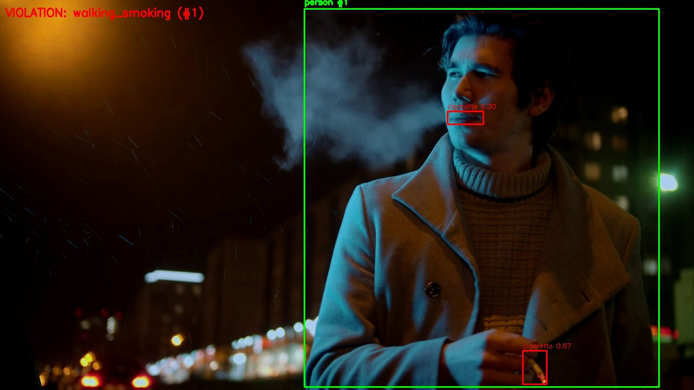
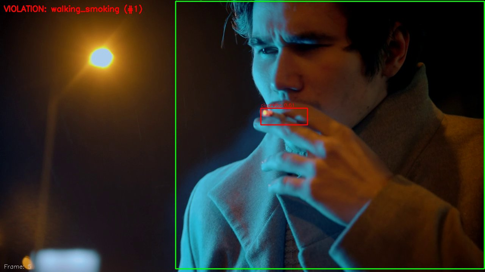
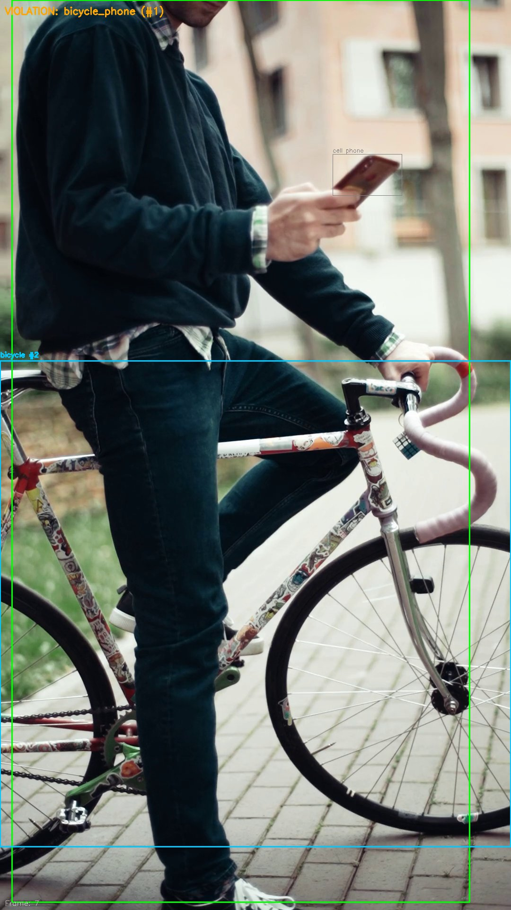

アラート 7
11:42:15
歩きタバコ
CAM-01 | Track #142 | conf: 0.85

VLM: タバコを右手に持ち、煙が確認できる (confidence: high)
11:38:02
歩きタバコ
CAM-03 | Track #89 | conf: 0.78

VLM: 手を口元に持っていく喫煙動作を確認 (confidence: high)
11:25:44
自転車スマホ
CAM-02 | Track #56 | conf: 0.73

VLM: 自転車横でスマホを操作中 (confidence: high)
11:12:30
歩きタバコ
CAM-01 | Track #34 | conf: 0.82
対応済み - 巡回員が指導完了
10:55:18
歩きタバコ
CAM-05 | Track #21 | conf: 0.76
対応済み
10:30:05
歩きタバコ
CAM-03 | Track #15 | conf: 0.81
対応済み
09:45:12
歩きタバコ
CAM-01 | Track #8 | conf: 0.79
対応済み